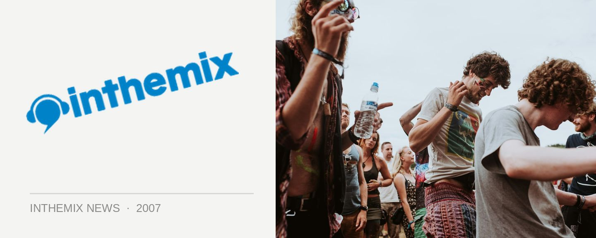

Lineup revealed for Ministry of Sound NYD
Coming shortly after they announced the details for their early December festivals, the Ministry of Sound crew have revealed plans for a day/night event in Sydney this NYD. Check below for the lineup!
Taking place at the Mean Fiddler in Rouse Hill, 40 minutes outside of the Sydney CBD, the event will run 2pm to 2am and will take place across both the indoor and outdoor entertainment areas that the venue offers.
Tickets are $75+BF for first release, and $85+BF for full release, and will go on sale this Wednesday October 10th.
Sneak Sound System (live/DJ)
Presets (live)
Claude Von Stroke
Meck
Riot in Belgium
Potbelleez
Aston shuffle
John Course
Goodwill
Sam La More
Klaus Hill
Tommy Trash
Tim McGee
Trent Rackus
Jeff Drake
Steve Lind
Heath